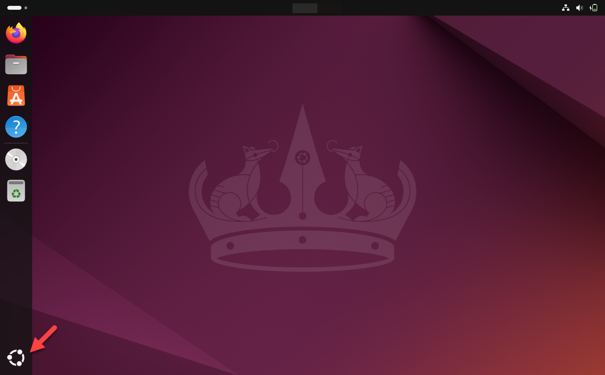
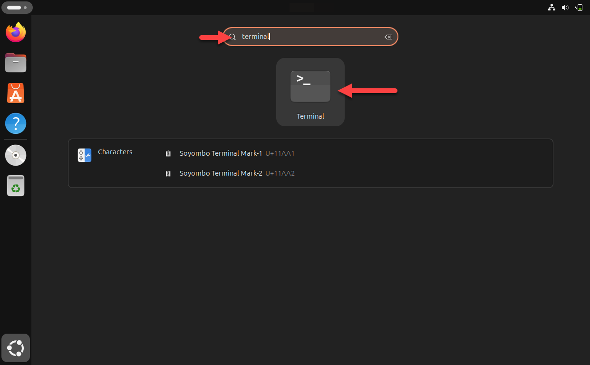
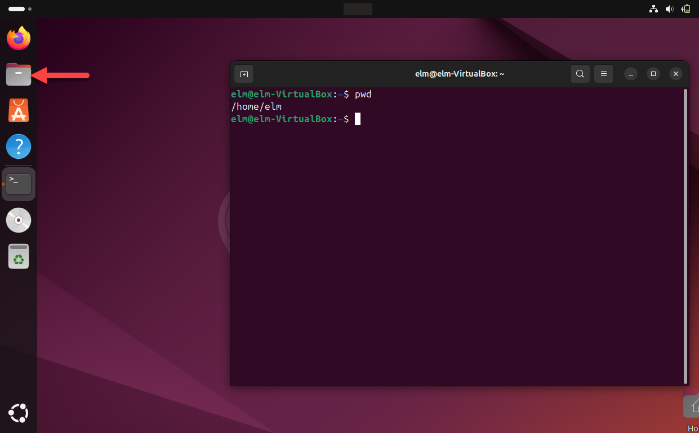
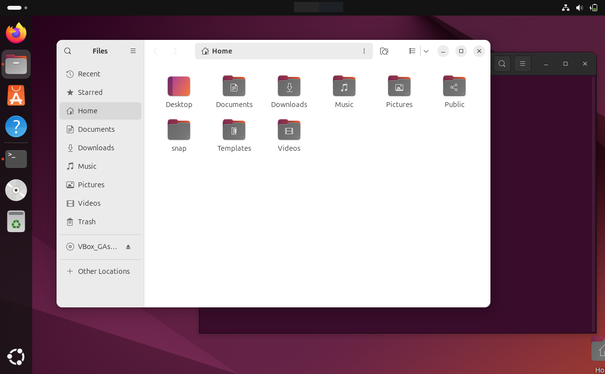
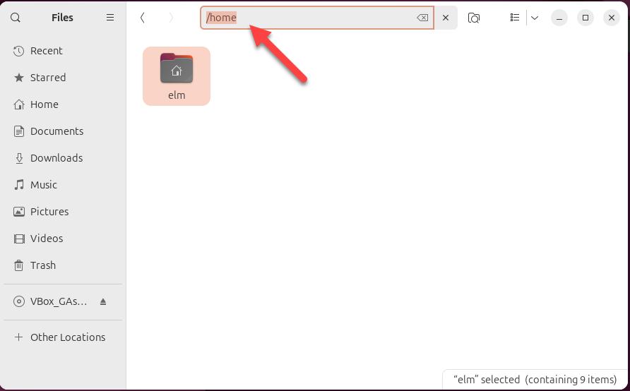

Je start de virtuele machine met Ubuntu op, opent er een terminal in en zoekt uit waar je staat. Alle
uitvoer hieronder komt van de gebruiker elm; werk je met een andere gebruikersnaam, dan
staat die van jou in de prompt.
Start je virtuele machine op en meld je aan met de gebruiker elm en het wachtwoord mle, de gegevens die je bij de installatie van Ubuntu ingevuld hebt.
Alles wat je daarna start, draait dan met alle rechten. Werk als gewone gebruiker en verhoog je
rechten per commando met sudo, verderop in deze oefening. Waarom dat uitmaakt, staat
bij Gebruikers en
rechten.
Klik linksonder op het icoon Toon toepassingen.

Typ terminal in het zoekveld en klik de toepassing Terminal aan.

Het venster dat opengaat is leeg op één regel na, de prompt. Wat de vier delen daarvan betekenen, staat bij De terminal.
En spaties en streepjes tellen mee. ls -alh werkt, LS -alh en
ls-alh niet. Zie De terminal.
Typ pwd en druk op ENTER.
/home/elm
Je staat in de persoonlijke map van de gebruiker elm. Dat is ook wat de
~ in de prompt zegt: die tilde staat voor /home/elm.
Ubuntu heeft naast de terminal ook een grafische bestandsverkenner, die Files heet. Leg die er even naast, zodat je ziet dat de twee over dezelfde mappen gaan.
Klik in de balk links op het icoon van Files.

Files opent op Home. Dat is dezelfde map als /home/elm, met de
submappen Desktop, Documents, Downloads en de andere erin.

Klik in de adresbalk, typ /home en druk op ENTER. Je komt in de
bovenliggende map, waar één map in staat: elm.

Open elm en controleer dat je weer op Home staat. Sluit Files daarna af.
Maak het venster leeg met clear. Dat wist alleen wat je ziet; de commando's die je
gegeven hebt blijven bewaard.
Druk drie keer op pijl omhoog en daarna één keer op pijl omlaag. Kijk welk commando er nu op je regel staat.
Voer dat commando niet uit. Druk op CTRL+C om je regel af te breken.
Vraag de volledige lijst op met history. De jouwe ziet er anders uit dan die
hieronder, want er staan de commando's in die jij ingegeven hebt.
1 sudo reboot
2 sudo apt install bzip2
3 sudo apt install tar
4 sudo apt install gcc make perl
5 sudo shutdown now
6 pwd
7 clear
8 ls
9 ls -alh
10 clear
11 history
Een lang commando waar één optie aan ontbrak, haal je met pijl omhoog terug en pas je aan. Dat gebruik je verderop in deze oefening een paar keer.